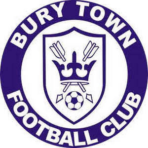

Trade Mark Journal No.2025/014 4 April 2025
UK00004169341 5 March 2025 (25,35,41)

- Class 25
- Clothing; footwear; headgear; football boots; sportswear; football shirts; t-shirts; polo shirts; jumpers; sweatshirts; sweaters; jackets; coats; gilets; hats; bucket hats; bobble hats; beanie hats; socks; football socks; scarfs; ties; gloves.
- Class 35
- Advertising; promotion of football events and football competitions; promotional sponsorship; search for financial sponsorships for football players and competitions; retail services connected with the sale of clothing, footwear, headgear, clothing for sports, sports shirts, sports jerseys, trousers, sweatshirts, sweaters, jackets, coats, gilets, gloves, scarves, hats, bucket hats, bobble hats, beanie hats, polo shirts, T-shirts, socks, football socks, sportswear, sports jackets, ties, pin badges, keyrings, water bottles, bottle openers, tankards, umbrellas, phone cases, wallets, rucksacks, mugs, travel mugs, soft toys.
- Class 41
- Education; providing of training; entertainment; sporting and cultural activities; sports club services; sports training; sports camps; sports coaching; sports activities; sporting services; providing sports facilities; sports club services; sports entertainment services; providing sports news; organising of sports competitions and sports events; providing sports equipment; arranging and conducting youth football programs; providing information relating to the sport of football via a website; publishing of sporting fixtures; publishing of sporting results; publishing of interviews; electronic publications (not downloadable); production of video and audio recordings; organisation of sporting events; production of video and audio recordings relating to football; organisation of football competitions and football events; organising sports events relating to football; booking agency services for sports tickets; reservation services for sports tickets; fan club services; membership scheme services; information, advisory and consultancy services relating to the aforesaid.
BURY TOWN FOOTBALL CLUB (1995) LIMITED
Representative: HGF Limited